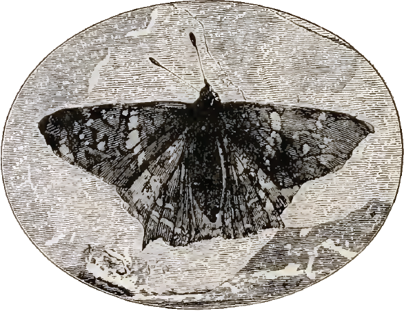
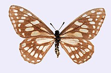
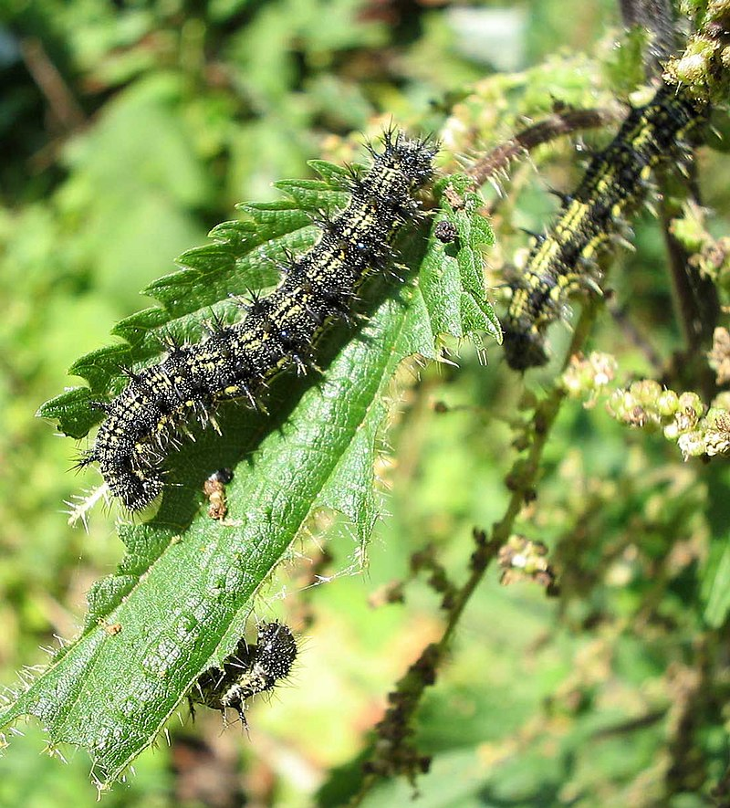
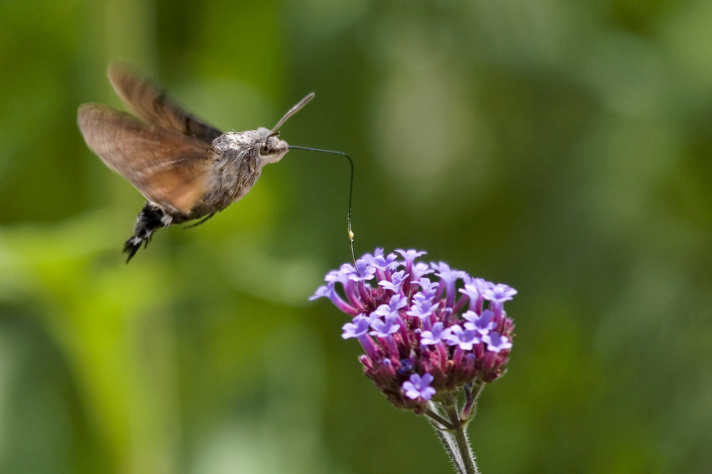

Зміст
- Етимологія назви
- Філогенія та еволюція
- Систематика та класифікація
- Чисельність видів
- Будова тіла
- Життєвий цикл
- Яйце
- Личинка
- Лялечка
- Імаго
- Поширення
- Класифікація
- Біологічна роль та значення в народному господарстві
- Див. також
Етимологія назви
Латинська назва ряду Lepidoptera походить від дав.-гр. λεπίς, род. відм. λεπίδος — «луска» і πτερόν — «крило». Свою назву «лускокрилі» представники ряду отримали у зв'язку з тим, що їх крила вкриті лусочками, що являють собою видозмінені щетинки. Загальновживана українська назва представників даного ряду — «метелики» сходить до прасл. *motyl'ь (пор. рос. мотылёк, чеськ. motýl, пол. motyl — «метелик»), яке є похідним від дієслова *mesti, *motati sę («кружляти, рухатися ривками») через особливості польоту цих комах[1][2][3]. Назва «міль» походить від прасл. *molь, яке, за однією версією, є похідним від * melti «молоти» (тоді етимологічне значення слова — «дрібнюча (шкідлива) комаха»), за іншою, пов'язане з дав.-гр. μῆλον «дрібна худоба», ірл. míl «тварина» (з етимологічним значенням «дрібна тварина»)[4]. Загальновживана російська назва — «бабочка» сходить до прасл. «стара, бабка» і уявлення про цих комах, як про душі померлих[5]. І донині в багатьох селах Росії їх називають «бабуля», «бабушка», «бабучка», «бабурка», «баба»[6]. Англійська назва butterfly, дослівно «масляна муха», виникла з середньовічного повір'я, що в образі метеликів ховаються ельфи, які прилітають красти молоко та вершкове масло (англ. butter). Існує також версія, що таку назву вони отримали через свої екскременти, схожі за кольором на вершкове масло[7].
Філогенія та еволюція
З погляду філогенії лускокрилі найближчі з волохокрильцями (Trichoptera), разом з якими вони утворюють групу Amphiesmenoptera. Представники обох рядів мають багато спільних ознак: самиці, а не самці, є гетерогаметними, що не характерно для інших рядів комах; є щільні волоски на крилах; специфічне жилкування передніх крил; наявність у личинок спеціалізованих залоз, що виробляють шовк. Лускокрилі, своєю чергою, відрізняються від волохокрильців деякими особливостями жилкування крил, а також формою волосків, які у них модифіковані в лусочки. Імовірно, представники Amphiesmenoptera почали еволюціонувати безпосередньо в юрському періоді, відокремившись від вимерлої групи Necrotaulidae. Найдавніші викопні рештки лускокрилих, віком 190 млн років, були знайдені у відкладеннях раннього юрського періоду поблизу Дорсета у Великій Британії й відомі під назвою Archaeolepis mane. Вони являють собою відбиток пари крил, покритих лусочками, з жилкуванням схожим на таке у представників ряду волохокрильців. Рід, який описали на підставі цих залишків — Archaeolepis, є найбільш раннім з відомих викопних лускокрилих[8][9]. Розвиток ряду відбувався в крейдяному періоді[10]. Їхні активні рослиноїдні личинки харчувалися зеленими тканинами рослин, а крилаті дорослі особини (імаго) проявляли малу активність, їхній ротовий апарат був слабо розвиненим. З часом, шляхом нескладної перебудови їхні ротові органи подовжилися та утворили м'який і довгий хоботок, здатний всмоктувати рідини, що дозволило їм активно харчуватися нектаром квітів. Тривалість життя та абсолютні розміри крилатої фази збільшилася, а політ покращився[11]. Також лускокрилі виробили різноманітне яскраве забарвлення крил, на яких виникли складні малюнки. Поява яскравого забарвлення лускокрилих, безсумнівно, деякою мірою показує їхні тісні зв'язки з рослинами, квітки яких вони відвідують для харчування нектаром. Бурхливий розквіт лускокрилих безпосередньо пов'язаний з поширенням квіткових рослин, який стався в середині крейдяного періоду — близько 100 млн років тому. Метелики, своєю чергою, сприяли поширенню квіткових рослин, виступаючи в ролі їхніх запилювачів. Історія становлення лускокрилих і квіткових рослин є яскравим прикладом сингенетичного розвитку двох груп організмів, який відбувався відносно швидкими темпами в обох групах одночасно[10][12]. Залишки найдавніших лускокрилих виявлені у відкладеннях другої половини нижньої крейди та належать до представників найбільш примітивного підряду Micropterygina. Також з самого початку верхнього крейдяного періоду виявлені численні міни на листках покритонасінних рослин. У олігоцені вперше з'являються лускокрилі з гусеницями, що ведуть відкритий спосіб життя — представники родин: Hesperioidea, Papilionoidea, Zygaenoidea, Nymphalidae і Noctuoidea[10].
 Систематика та класифікація
Систематика лускокрилих, представлена в різних роботах, відображає різні погляди їх авторів і є дискусійною. Не вщухають суперечки, що стосуються систематичного положення або необхідності збереження статусу цілого ряду таксонів. Наприклад, одні дослідники вважають Morpho didius та Morpho godarti самостійними видами, а інші відносять їх до підвидів Morpho menelaus[13][14]. Дослідження ДНК свідчать, що деякі з відомих сьогодні видів повинні бути розділені. Добре відомим прикладом є випадок, коли на перший погляд ідентичні Colias alfacariensis і Colias hyale, раніше вважалися одним видом, були розділені на два, після того як були виявлені істотні відмінності в будові їх гусениць і лялечок[15].
Чисельність видів
Лускокрилі належать до одного з найчисленніших за кількістю видів ряду комах. Станом на серпень 2013 року відомо 158 570 видів, включно зі 147 вимерлими видами[17]. Припускають, що до 100 000 видів залишаються все ще не відомими науці. Таким чином, загальна кількість наявних на планеті видів лускокрилих може бути оцінена приблизно в 200 000[16][18] — 225 000 видів[19]. Лускокрилі є дуже різноманітними, а більшість їхніх видів погано вивченими. Деякі з описаних видів відомі за знахідками з однієї єдиної місцевості або навіть за єдиною особиною.
Будова тіла
Тіло лускокрилих видовжене, на ньому найбільше помітні вкриті лусками і волосками крила — придатки грудей.
Голова несе пару антен, які мають різноманітну будову: ниткуваті, булавчасті, веретенисті, пильчасті, гребінчасті та інші. Ротовий апарат завжди сисного типу. Між парою губних полапків знаходиться згорнутий у спіраль хоботок, що складається з двох видозміненних видовженних максил, що мають на внутрішній поверхні жолобки. Іноді ротові частини редуковані. По боках голови знаходяться фасеткові очі, часто добре розвинені.
До грудей кріпляться ноги ходильного типу. У деяких видів (сонцевики) перша пара ніг недорозвинена і не виконує функції ходіння. Крила часто великі, вкриті подібно до черепиці лусками, що надають крилу забарвлення. Луски містять пігменти різного кольору, що дозволяють їм утворювати малюнок, іноді досить складний. На крилах метеликів розрізняють такі елементи візерунку як крапки, штрихи, стрічки, перепаски, прості або очкуваті плями тощо. Також деякі метелики мають оптичне забарвлення, викликане особливою формою поверхні лусок, яка специфічно відбиває світло (дисперсія і створює блакитно-фіолетовий відблиск, а у деяких видів також і в ультрафіолетовому спектрі. Крила самців іноді вкриті особливими лусками андроконіями, які поєднані із залозами, що секретують характерні для певного виду пахучі речовини (іноді їх може відчувати і людина). Такі луски можуть бути розташовані по всьому крилу чи зібрані в андроконіальні плями і допомагають у розпізнаванні самицями самців. У самиць деяких видів крила не розвиваються. Значний внесок у дослідження забарвлення крил метеликів, його еволюцію та біологічну роль зробив ентомолог Б. М. Шванвич. Черевце метеликів видовжене, вкрите лусками, що іноді утворюють візерунок, у самиць часто потовщене. Складається з десяти сегментів, останні 2 сегменти у самців і 3 у самиць перетворені на зовнішні статеві органи.Життєвий цикл
Життєвий цикл лускокрилих проходить з повним перетворенням через чотири стадії: яйце, личинка, лялечка, імаго
Яйце
Всі лускокрилі відкладають яйця (серед них немає живородних видів). Яйця лускокрилих дуже різняться між собою як за зовнішнім виглядом, так і за розмірами та формою яйцекладки, тому часто можна вказати, якому виду метеликів належить яйцекладка. Відкладають яйця метелики також по-різному. Деякі види відкладають усі яйця за один раз, інші роблять декілька кладок. В одній кладці може бути від одного яйця до кількох тисяч.
Личинка
Личинка лускокрилих називається гусениця. Більша частина гусениць — фітофаги, тобто живляться рослинами. Але серед них трапляються і інші види живлення, наприклад, кератофагія (живлення волосяним покривом, характерне для багатьох молей), ксилофагія (живлення деревиною, в родині скловидок), хижацтво та деякі інші. На нижній губі гусениць є павутинна залоза. Пересуваючись, гусениця лишає за собою слід з павутини. Багато видів плетуть з павутиння кокони, інші за його допомогою скріплюють листки харчової рослини, утворюючи таким чином камеру, в якій живуть. Деякі види утворюють колонії на цій стадії. Покрив гусениці, як і всіх інших комах, утворений з хітину, тому, зростаючи, їм необхідно час від часу линяти. Після линяння покрив на деякий час залишається м'яким, що дозволяє гусениці рости. Ріст та линька регулюються спеціальним гормоном линяння — екдизоном. У гусениці останнього віку цей гормон не виділяється, і замість чергового линяння вона заляльковується.
Лялечка
Лялечка — це стадія спокою лускокрилих, під час якої проходить структурна перебудова тварини, і з личинкових органів утворюються імагінальні. Лялечка є нерухомою (лише декілька дорсальних сегментів черевця рухливі). Деякі види лускокрилих зимують на цій стадії.
{kind=link}
Імаго
Із лялечки виходить доросла комаха — імаго. Ця форма є статевозрілою, тобто здатна до розмноження. У перші хвилини комаха ще не здатна літати. У цей час крила розпрямляються під тиском гемолімфи, яка заповнює судини, та тверднуть, відбувається остаточне набуття забарвлення. Імаго більшості видів живляться нектаром квітів або соками рослинного чи тваринного походження. Інколи взагалі не живляться (афагія). Основна функція цієї стадії життєвого циклу — розмноження та розселення. Стадія імаго триває від кількох годин до багатьох місяців (у видів, що зимують на цій стадії).
{kind=link}
Поширення
Лускокрилі поширені на всіх континентах крім Антарктиди і найбільшого різноманіття досягають у тропіках. У Центральній Європі налічується більше 4000 видів. У світовій фауні описано понад 160 000 видів. На сьогоднішній день дуже багато видів знаходяться на межі зникнення, переважно через знищення їхніх біотопів (місць, де вони живуть). Багато видів виловлюються для колекцій, що також завдає великої шкоди чисельності їх популяцій. Так, в Україні, станом на 2023 рік, у межах Національного природного парку «Тузловські лимани» зафіксовано тільки трохи більше ніж 350 видів лускокрилих (метеликів)[20].
Класифікація
Систематика ряду на сьогодні недостатньо розроблена. Традиційно лускокрилих поділяли на два великі підряди рівнокрилих та різнокрилих, але ця класифікація виявилася занадто штучною. Часто для зручності метеликів поділяють на денних (булавовусих, або великокрилих) та нічних (малокрилих, молей). Проте ці групи також не є таксонами і не мають наукового значення. Найкрупніша категорія рівня нижче ряду — це надродина. У фауні Європи налічується 33 надродини. Усього в світовій фауні налічують від 100 до 200 родин (систематики ряду ще не дійшли згоди щодо їхньої кількості, але останнім часом спостерігається тенденція до збільшення кількості родин і зменшення їх об'єму).
Біологічна роль та значення в народному господарстві
Більшість видів лускокрилих на стадії імаго живиться нектаром квітів, і тому є важливими запильниками багатьох видів рослин. Гусениці живляться переважно листям рослин, і, розвиваючись у великій кількості, можуть нерідко викликати загибель рослин (навіть дерев), або призводять до того, що рослина не здатна утворити насіння. Це часто завдає великих збитків сільському та лісовому господарству. Таке явище характерне тільки для деяких видів метеликів, наприклад, біланів, совок. На стадії гусениці, переважна більшість видів лускокрилих живляться рослинами, що не мають сільськогосподарського значення. Деякі з цих метеликів живляться дуже обмеженою кількістю видів рослин (олігофагія). Наприклад, поліксена (Zerynthia polyxena) живиться лише 4 видами рослин роду Aristolochia (хвильовик). Через зменшення біорізноманіття навколишнього середовища та руйнування природних біотопів, багато видів метеликів в Україні знаходяться під загрозою зникнення. Тому в екології вважається, що наявність багатьох видів лускокрилих у певній місцевості свідчить про її «екологічне здоров'я» (так звана біоіндикація). Лускокрилі посідають важливе місце в кругообігу речовин у природі, оскільки вони живляться рослинною їжею, а самі є кормовою базою для багатьох видів хижаків, особливо птахів, та паразитів. Декілька видів шовкопрядів вирощуються в штучних умовах заради отримання шовку. Вагомий внесок у вивчення і удосконалення їх використання у шовківництві зробили українські ентомологи О. З. Злотін і М. М. Синицький. Багато видів метеликів, особливо тропічних, є об'єктами колекціонування, а часто і дизайну.
